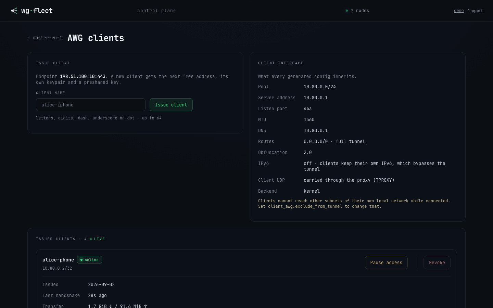
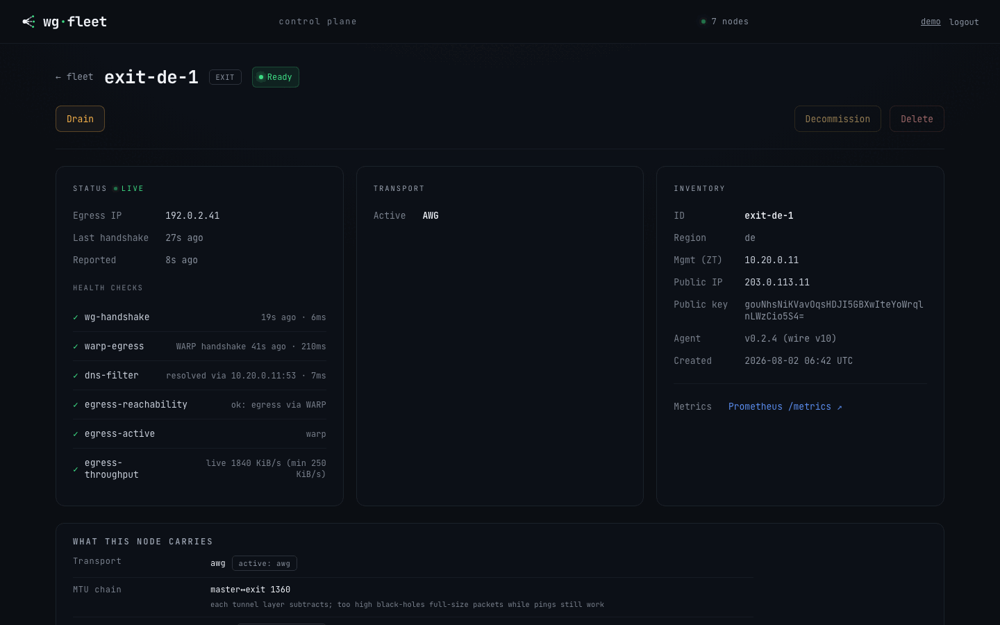

Operations¶
Day-to-day fleet operation: planning changes, the dashboard, client access, break-glass access, backup and restore, certificates, metrics, node health, kernel and AmneziaWG module upgrades, and client interception in mihomo's network namespace.
See also cli.md for every flag and upgrade.md for rolling the agent binary forward.
Dry-run everywhere¶
| Flag | Binary | Effect |
|---|---|---|
--plan |
agent | Render every config and the exact change set, write nothing. |
--provision … --plan |
controller | Render every config and the exact change set, write nothing. |
Plan output shows files (secrets redacted), commands, and DB updates.
Web dashboard¶
controller.webui serves a fleet view. Bind it to the ZeroTier address.
controller:
webui: 10.20.0.10:9000 # mgmt/overlay address only
client_portal: 10.20.0.10:9001
session_ttl: 168h
fleet:
masters:
- name: master-1
client_admin_ports: [9001] # optional: reach the portal from the client pool too
Any port listed in client_admin_ports is reachable by every client credential holder
(AWG and VLESS alike) — list the portal port there, not the Web UI's, unless client
access to the admin panel itself is intended.
All keys: configuration.md#2-controller-the-controller-process, configuration.md#identity-and-exposure

| Surface | Shows |
|---|---|
| Fleet list | Per-state summary, live refresh, state badges. |
| Topology | The master trunk, then exits split into CARRYING and NOT CARRYING, each not-carrying exit with the master's verdict on the tunnel to it (below). |
| Node detail | Inventory, latest status + health checks, rendered NodeSpec preview (AWG params, peers, routing, firewall, DNS, master data plane), a version-skew badge when the agent's wire version is incompatible, and the same verdict badge beside the state pill. |
Why an exit is not carrying — the badge on its card and on its node page:
| Badge | Means |
|---|---|
out of rotation 12m · probes 0/3 |
The master's own multi-destination probe judged this tunnel unusable and pulled the exit out of the load balancer 12m ago; the last pass reached 0 of the 3 destinations it sampled. |
no usable path · probes 0/3 |
A member of the idle reserve tier the last warm probe could not reach the internet through. It carries nothing today, so this is not an outage — it means failing over to it would restore nothing. |
| no badge | Nobody judged this exit: it is carrying, or it sits behind the member the reserve scan stopped at. Absent evidence, not evidence of health. |
Ready next to out of rotation is not a contradiction: the state pill reports
the node's own self-checks, the badge reports the master's ability to route through
it. The same verdicts are exported as wgfleet_agent_exit_held_out and
wgfleet_agent_standby_tier_member_usable, with alerts in the archive's
monitoring/.
Actions are confirmed POSTs with CSRF and same-origin checks.
| Action | Effect |
|---|---|
| Provision | SSH-bootstrap a Pending node asynchronously (Pending → Provisioning → Ready). |
| Upgrade | Roll the agent binary forward over SSH without tearing down the data plane. |
| Drain | Keep the node as a configured proxy but remove it from load-balance. Existing connections survive, no new traffic. |
| Undrain | Rejoin the load-balance group. |
| Decommission | The agent tears down the data plane on its next reconcile (stop services, clear routing/firewall, best-effort reverse reconcile) and destroys the node's WireGuard and REALITY private keys. A recommissioned node comes back with new ones and is re-peered from scratch. |
| Delete | Remove the exit from inventory AND from the manifest: its block in fleet.exits, plus its name in any reserve_exits. |
| Download backup | Export an age-encrypted archive of the controller (and co-located master) state. |
Delete does not revoke the certificate, but a deleted id is refused at registration until you provision it again. Delete once the server is gone, or stop its agent first. No client credential lives on an exit.
Drain, Decommission and Delete are exits only, enforced server-side. Undrain and Recommission are not restricted, so a node carrying either flag always has a way back from the console.
Client credentials (AmneziaWG)¶

On a master with client_awg.managed, its node page has a Client credentials
panel.
controller:
client_portal: 10.20.0.10:9001 # optional self-service links
client_portal_url: https://vpn.example.org
fleet:
masters:
- name: master-1
client_awg:
managed: true
listen_port: 443
address_pool: 10.80.0.0/24
All keys: configuration.md#client_awg-the-client-facing-amneziawg-listener, configuration.md#2-controller-the-controller-process
| Action | Effect |
|---|---|
| Issue | Create a credential and open its card: .conf, QR, and a self-service link (a page carrying only that profile, reached over the tunnel or the portal address). Hand out the link rather than the file. |
| Pause | Reversible. The peer is removed from the interface and the self-service page says so. The same config works again on resume. |
| Rename | A label for you only. Nothing the person holds changes. |
| Revoke | Permanent. The credential and its key are deleted, and the only way back is a new profile. The console confirms on its own page. |
A VLESS credential (below) has no pause. Revoking is the only way to cut one off.
Client devices¶
A device is one physical device of one person. Its link serves a mihomo profile with a proxy for every credential it holds: AmneziaWG and VLESS, on every master.
Console: devices (top bar).
Prerequisites:
| Need | Why |
|---|---|
The portal port is in client_admin_ports |
Otherwise a device can never reach /c/<token> or /c/<token>/mihomo to fetch its profile, on either transport. |
client_awg.route_through_cidrs requires client_awg.exclude_from_tunnel |
The controller refuses the config without it (validation) — a route only makes sense as an exception to something already excluded from the tunnel. |
client_vless.route_through_cidrs has no such requirement |
It feeds the same device-profile routing rules as the AWG list, but the VLESS transport has no exclude_from_tunnel of its own to require it against. |
| Action | Effect |
|---|---|
| Create | New device. Per master: issue a new AWG / VLESS credential, attach an unattached one, or leave the slot empty. |
| Attach | Put an unattached credential into an empty slot. The credential's own personal link (/c/<credential-id>) stops working for good; the console asks first. |
| Detach | Empty the slot. The credential stays on its master without a personal link. A device whose link was that credential's ID gets a new link. |
| Rotate link | New link; the old link and subscription stop at once. Credentials unchanged. |
| Delete | Removes the device and its link for good. Credentials stay, unattached, without personal links. |
Limits: one AWG and one VLESS credential per master per device. One AWG credential belongs to one device.
| Link | Content |
|---|---|
<client_portal_url>/c/<token> |
Page: subscription link + QR, AmneziaWG .conf, vless://, reserve configs |
<client_portal_url>/c/<token>/mihomo |
Profile, text/yaml, Profile-Update-Interval: 24 |
Without controller.client_portal_url the link uses the portal's bind address.
Tested apps (mihomo core ≥ 1.19.30):
| App | Platform |
|---|---|
| FlClash | Android, macOS |
| ClashMetaForAndroid | Android |
| ClashX Meta | macOS |
| Clash Verge Rev | macOS |
First import (the portal is reachable only through the tunnel):
| Step | Who | Action |
|---|---|---|
| 1 | Operator | Device page → Download profile (.yaml); send the file to the person. |
| 2 | Person | In the app: import the file, switch on TUN, connect. |
| 3 | Person | Open the device link, add the subscription link as a new profile from URL, switch to it. |
| 4 | Person | Delete the file profile. It never updates itself. |
Devices that can already reach the portal skip steps 1–2: add the profile from URL, switch on TUN, connect.
| Profile part | Value |
|---|---|
| Proxies | <master>-awg, <master>-vless for each attached, active credential |
<master> |
fallback over that master's proxies |
auto |
fallback over all proxies, generate_204, every 300 s |
wgfleet |
select: auto or any proxy |
| Rules | route_through_cidrs (both transports) and mgmt_subnet → wgfleet; the master's client pool → <master>; RFC1918, link-local, loopback → DIRECT; rest → wgfleet |
| DNS | each master's client resolvers, tcp://<addr>:53 through <master>; absent when the master has none |
Symptoms:
- Page says paused — every credential of the device is paused, or none is attached.
- Something is wrong on our side — a credential is active but its master has no published key or endpoint yet.
- This link is no longer working — the link was rotated, the device deleted, or the credential attached to a device.
- Profile never changes after a fleet update — the person is still on the file profile (step 4 skipped).
- Profile never refreshes while on AWG —
client_awg.exclude_from_tunneltakes the client portal (or the mgmt overlay it binds on) out of AllowedIPs, so a device that has fallen back to AWG can never dial the portal to fetch its subscription. The controller logs a WARN naming the master and the uncovered range at startup; fix by adding it toclient_awg.route_through_cidrs. - Internal names do not resolve — check
dns_filteron the master and the blocky mapping. - AWG throttled but alive — pick
<master>-vlessin thewgfleetgroup.
The master is lost: reserve configs¶
An exit with lifeline carries a second client interface awgl0 with the
master's credentials. Each credential gets a reserve profile per lifeline exit.
Hand them out in advance, because the console and the portal live on the
master.
fleet:
exits:
- name: exit-a
lifeline:
listen_port: 47128
address_pool: 10.90.0.0/24
egress: direct
All keys: configuration.md#lifeline
Tell the person to switch the app to the reserve profile they already imported, and to switch back when the master returns. Reserve traffic uses that exit's uplink (or WARP), without fleet routing, geo rules or failover.
| Surface | Where the reserve configs are |
|---|---|
| Console | node page → credential card → RESERVE · if the main server stops working, one .conf + QR per exit |
| Portal | the person's own page → If the main server stops working (ready exits only; hidden while paused) |
Console reasons when an exit is not ready:
| Reason | Fix |
|---|---|
the exit has not published its lifeline key yet |
Wait one reconcile pass. |
no public endpoint known for this exit |
Set public_ip on the exit. |
| Ready, but the profile never connects | Check the Endpoint = line of a downloaded reserve .conf. Unset public_ip falls back to ssh.host; if that was ever repointed at the management overlay, the profile carries an address no client can dial. Declare public_ip. |
| Connects, but nothing loads and DNS times out | Not the exit. On Linux, wg-quick/awg-quick routes the profile's own endpoint into the tunnel whenever AllowedIPs is a split list rather than 0.0.0.0/0 — ip route get <endpoint> shows the tunnel device and ip rule has no fwmark. Phones are unaffected. |
Reserve configs could not be listed: … |
Listing failed. Credentials and main configs still render. |
Check on the exit:
awg show awgl0 # port, peers, handshakes
nft list table inet wgfleet | grep -E 'awgl0|<lifeline port>' # accept, masquerade, leak guard
iptables -S DOCKER-USER | grep awgl0 # forward accepts
Health check lifeline on the node page, red with a reason (no key yet, spec
rejected, AmneziaWG 3.x refused by the module), means awgl0 serves its last
good config, not the current spec.
Turning it off takes two reconcile passes. Pass 1 brings awgl0 down and keeps
the config, pass 2 removes the config.
Retire a hand-built emergency interface before adding lifeline to an exit that
already has a hand-made awgl0:
systemctl disable --now awg-quick@awgl0
rm /etc/amnezia/amneziawg/awgl0.conf
rm -r /etc/systemd/system/awg-quick@awgl0.service.d
systemctl daemon-reload
Then add the lifeline section. The server key changes, so peers issued against
the old interface re-import the reserve profile from the console or the portal.
Client access (VLESS)¶
On a master with client_vless.enabled, its node page has a VLESS clients
entry. Issue per-client credentials there and hand each user one of these.
fleet:
masters:
- name: master-1
client_vless:
enabled: true
route_through_cidrs: [10.20.0.0/16] # internal nets clients tunnel to
All keys: configuration.md#client_vless-dpi-resistant-client-transport
| Handout | Notes |
|---|---|
Clash config (.yaml) |
The recommended client on macOS. It bakes in the proxy, tun strict-route (without it macOS leaves RFC1918 off the tunnel) and DNS resolved over TCP :53 through the tunnel. Import into Clash Verge Rev and enable Tun Mode. |
| vless:// link / QR | Any VLESS client. Internal networks: use a device (Client devices). |
client_vless.route_through_cidrs in the manifest controls which internal
networks the device profile routes through the tunnel.
Break-glass: reaching a node you just cut off¶
Firewall, client-interface and NAT changes all land on the master, which is usually the box you are connected through. SSH over the ZeroTier mgmt overlay survives every knob in the manifest. Use the overlay, not the public IP, as the escape hatch.
fleet:
mgmt_subnet: 10.20.0.0/16 # trusted by construction on every node
exits:
- name: exit-a
firewall:
whitelist: [198.51.100.0/24]
All keys: configuration.md#3-fleet-fleet-wide-settings, configuration.md#firewall
| Rule | Detail |
|---|---|
| Overlay accept | The input chain accepts iifname "zt*" ahead of masters[].whitelist, public_udp_ports, public_tcp_ports and the AS blacklist. |
| Leak guard | The egress leak guard cannot touch a master. |
| Public SSH port | Opened after the AS-blacklist drop, so direct SSH from a flagged address can be refused while the overlay still works. |
- Keep a second SSH session open on the master for the whole of any firewall,
routing or client-interface change. Run
wgfleet-agent --once --planin it to see why the new state locked you out. - Reach an exit through the master when its public path wedges:
ssh <master>, thenssh root@<exit-mgmt-addr>. - Have provider console access ready (VNC/serial) before touching the master's firewall.
The agent keeps its last-good spec on disk at /var/lib/wgfleet/last-spec.json
(0600). A controller that is down or refusing a bad manifest does not take the
data plane with it, and a node that reboots in that window comes back converged
(nftables, interfaces, routing).
| See | Meaning |
|---|---|
A node goes stale in the console and in wgfleet_node_last_report_age_seconds while healthy |
It runs from the cache and reports nothing. Its log says converging on the last-good spec instead of standing still. |
| The controller answers and refuses: a deleted node, a revoked certificate, a wire-version mismatch | The refusal is obeyed. A node you deleted does not rebuild itself. |
The fallback happens only when NOTHING ANSWERED, meaning a dial failure or a timeout.
A node changed its public address¶
The address the fleet dials is declared in the manifest and nowhere else. A move is a manifest edit plus a controller restart, with no re-provisioning.
fleet:
exits:
- name: exit-a
public_ip: 198.51.100.7 # the endpoint the master dials
ssh:
host: 198.51.100.7 # public_ip defaults to this
All keys: configuration.md#identity-and-egress
- Edit the node's entry.
- Restart the controller. It reads the manifest once at startup and never reloads it.
- Wait for two reconcile passes (~60 s at the default 30 s interval). The master re-renders the tunnel at the new endpoint and re-dials, then the exit sees the fresh handshake and leaves Degraded.
| Role | Key | Rules |
|---|---|---|
| Exit | public_ip when set, otherwise ssh.host (its default) |
Set both if SSH and the tunnel should go to different addresses. The value must be an IP literal; a DNS name is skipped and the next source is used. |
| Master | public_ip, and only that |
It does not fall back to ssh.host (often the management overlay, which must never reach a client profile). A master with no public_ip has no endpoint to hand out and the client pages say so. A master's public_ip may be a DNS name, and master-migration.md recommends one. |
If it was the master that moved, client profiles already handed out still carry the old endpoint. Re-issue them and have each device re-import.
Support bundle¶
A read-only, plain-text diagnostic archive with no secrets, for handing a broken fleet to someone with no access to it. Full runbook: support-bundle.md.
# One node. Depends on nothing — this works when the control plane is down.
wgfleet-agent --support-bundle --note "clients stopped resolving around 14:00"
# The exits, plus a fleet inventory. Needs a live controller and SSH.
wgfleet-controller --support-bundle --fleet
Read it before sending it.
| Need | Do |
|---|---|
| List the archive | tar tzf <archive> |
| Extract it | tar xzf <archive> |
| See every file and what was not collected | Read MANIFEST.txt inside it. |
| The tool refuses to write the archive | Report the refusal rather than working around it. |
| The master is the problem | --fleet collects only one inventory line about the co-located master, so run the agent bundle on the master too. |
| The problem is client-side | Run client-diag.sh from the client. |
Backup & restore¶
One command captures the irreplaceable state and one restores it onto a fresh node. Everything else (nft, mihomo/xray/blocky configs, compose files) is regenerated by the agent's reconcile loop and is not captured.
controller:
store: /var/lib/wgfleet/state.db
pki:
ca_key: file:///etc/wgfleet/ca.key # a file travels in --backup, secret:// does not
All keys: configuration.md#2-controller-the-controller-process
# Export (controller may stay live; the db snapshot is WAL-consistent).
wgfleet-controller --backup fleet.tar.age --age-recipient age1...
# ...or without --age-recipient to be prompted for a passphrase.
# Restore onto a fresh node (controller MUST be stopped). --plan shows the change set.
# An archive written with --age-recipient needs --age-identity on BOTH lines.
wgfleet-controller --restore fleet.tar.age --age-identity key.txt --plan
wgfleet-controller --restore fleet.tar.age --age-identity key.txt
# ...drop --age-identity for a passphrase-encrypted archive; age prompts for it.
Captured:
| Item | When |
|---|---|
The store db, a VACUUM INTO snapshot |
always |
| The CA cert + key | always |
controller.yaml |
always |
| The sops secrets file | when configured |
The fleet secret awg3.key |
always |
| The master's own AmneziaWG key | when this node is also a master |
| The client-interface key | when this node is also a master |
| The client-facing VLESS/REALITY key | when this node is also a master |
| The wg-easy client db and admin password | where wg-easy is still in use |
The node identity node.crt / node.key / agent.yaml |
when this node is also a master |
Six private keys in one envelope: store it like a secret.
Two things are neither captured nor regenerable, and the archive says so on every run. Copy them somewhere the master is not.
| Item | Path | Without it |
|---|---|---|
| The SSH private keys the exits are provisioned with | exits[].ssh.key_path; only the paths travel |
A restored controller cannot provision, upgrade or roll back any exit. |
| The ZeroTier identity | /var/lib/zerotier-one/ |
The node cannot rejoin as the SAME mgmt address. |
A secret the controller cannot put in the archive is warned about before the
archive is written, on the console's Backup button and the CLI: a pki.ca_key
behind env:// or secret://, an awg3_key that is not a file, or either at a
path this host cannot read. Treat that warning as a failed backup. Without
the CA a rebuilt host cannot issue or renew any certificate, and every node falls
off the control plane as its certificate expires.
Restore checks every destination before it writes anything, moves each
existing file aside to <path>.bak-<timestamp>, and writes atomically, only
where this host's controller.yaml says its files live and with this host's own
permissions. A rejected archive leaves the box unchanged. It removes a stale
SQLite write-ahead log beside a restored database, and refuses to run while a
controller is still serving on the configured endpoint.
Agents dial controller: <mgmt>:8443. To migrate, rejoin ZeroTier on the new
node as the same mgmt address and the fleet re-adopts itself. If the mgmt
address changes, update every node's agent.yaml controller: and re-issue the
server cert SAN; restore prints this reminder.
Certificates¶
Every node authenticates to the controller with an mTLS certificate issued for a year. Agents renew their own between 70% and 90% of that, in place, over the control plane, with no restart. The moment is spread per node name.
| See | Meaning |
|---|---|
wgfleet_agent_cert_expiry_timestamp_seconds stops going up |
Renewal is failing on that node. |
WgfleetNodeCertRenewFailing fires |
Every renewal attempt in the last 3 hours failed; the reason is in journalctl -u wgfleet-agent. |
WgfleetNodeCertExpiring fires |
Renewal has been failing for at least forty days. |
WgfleetNodeCertUnloadable fires |
The pair on disk failed to load at a handshake. Do not restart the agent until the key matches the certificate. |
Usual causes: the node was offline, the controller has no CA loaded, or a clock is wrong.
# What THIS host holds: the fleet CA and, on a co-located master, the local agent's certificate.
wgfleet-controller --certs check-expiration
Other nodes' certificates are on those nodes.
On a node with WgfleetNodeCertUnloadable, before restarting its agent:
journalctl -u wgfleet-agent | grep 'cannot re-read' # the error and the file paths
# the two lines must be identical; paths are agent.identity.cert / .key
openssl x509 -noout -pubkey -in /etc/wgfleet/node.crt | sha256sum
openssl pkey -pubout -in /etc/wgfleet/node.key | sha256sum
Identical — restart the agent to clear the alert. Different or unreadable — re-issue the pair out of band (below) and install both files before restarting.
A failed renewal leaves the pair it started with: the new key is only kept once its certificate is on disk.
An expired certificate cannot renew itself, because renewal travels over the mTLS channel it opens. Use the out-of-band path:
sudo wgfleet-controller --certs renew --node exit-de-1
It writes pki/exit-de-1/node.{crt,key} and prints the scp/ssh lines for that
node from the manifest. Delete the local copy afterwards.
There is no CRL: the old certificate stops being useful when it expires. A node
that has left the fleet (Decommission, or deleted) is refused renewal, and that
is the only revocation this system has.
Metrics¶
The controller (controller.metrics) and every agent expose Prometheus text on
the ZeroTier address only.
controller:
metrics: 10.20.0.10:9300 # controller.yaml
agent:
mgmt_addr: 10.20.0.11 # agent.yaml; binds /metrics on <mgmt_addr>:9301
All keys: configuration.md#2-controller-the-controller-process, configuration.md#8-agentyaml-per-node-agent
| Knob | Effect |
|---|---|
| default | The agent endpoint is on at <mgmt_addr>:9301, from agent.mgmt_addr. |
--metrics <addr> |
Override the bind. |
--metrics off |
Disable it. |
Controller (a scrape-time projection of the state store):
wgfleet_nodes{state="Ready"} # node count per lifecycle state
wgfleet_node_info{node,role,region,state} # inventory info (=1)
wgfleet_node_agent_info{node,agent_version,wire_version} # agent build + wire version (=1)
wgfleet_node_last_report_age_seconds{node} # since last status report
wgfleet_node_reconcile_failed{node} # 1 if last reconcile errored
wgfleet_node_health_check{node,check} # 1 ok / 0 failing
wgfleet_node_egress_info{node,egress_ip} # observed egress IP (=1)
wgfleet_node_drain{node} # 1 if administratively drained (out of LB)
wgfleet_node_decommission{node} # 1 if flagged for decommission (data plane torn down)
wgfleet_node_client_vless_clients{node} # VLESS/REALITY clients issued on a master
Agent (its own reconcile/health counters):
wgfleet_agent_reconcile_total{result} # success | error
wgfleet_agent_reconcile_duration_seconds # histogram
wgfleet_agent_state_info{state} # current lifecycle state (=1)
wgfleet_agent_health_check{check} # 1 ok / 0 failing
wgfleet_agent_drift_total{component} # count of unexpected config changes (drift-repairs)
wgfleet_agent_egress_active{method} # current active egress method (e.g. warp, direct)
wgfleet_agent_egress_reachability{state} # ok | degraded | blocked (censorship signal)
wgfleet_agent_start_time_seconds # for uptime
Host metrics (yours to upgrade)¶
The exporter on <mgmt_addr>:9100 is an optional component. wgfleet does not
pin its version and does not stand between you and an upgrade of it: what the
agent asserts is the outcome — something exports host metrics, and only on the
management overlay — not which binary produces it.
| Situation | What the agent does |
|---|---|
Something is serving <mgmt_addr>:9100 and nothing else |
Nothing. It is adopted as-is, whatever installed it. |
Nothing is serving the port, prometheus-node-exporter is installed |
Re-asserts its two files and starts the unit. Best-effort: a failure is a log warning, never the node's state. |
| Nothing is serving the port, no distro package | Says so in the plan. It never installs packages. |
The port is served on 0.0.0.0, [::] or another address |
Rebinds it to the overlay if the distro package owns it; otherwise reports the exposure. The exporter publishes every listening socket, mount and interface on the box. |
The bootstrap installs prometheus-node-exporter on a node that has no exporter,
and skips both the install and the bind step on a node that already serves the
port on its overlay address.
# Replace the distro exporter with your own build, on your own schedule.
systemctl mask prometheus-node-exporter # keep the two off the same port
apt-get purge -y prometheus-node-exporter prometheus-node-exporter-collectors
# your unit, bound to the overlay address and nothing else:
# ExecStart=/usr/local/bin/node_exporter --web.listen-address=<mgmt_addr>:9100
systemctl enable --now node_exporter
The one rule that is not yours to change is the bind: <mgmt_addr>:9100 only.
An exporter on the wildcard is a map of the node for anyone who can reach the
port. Missing host metrics are alarmed on the scrape target (30 m), not by the
node's own state — a node the agent cannot reach at all is exactly the case its
own report cannot cover.
Node lifecycle & health¶
A client's
pingdoes not test the exit path. ICMP is neither TCP nor UDP, so the master's interception does not catch it: a client's echo request is forwarded and leaves the master's own uplink, with the master's address. It therefore succeeds while every exit is down. To test the path a client's traffic actually takes, use TCP or HTTP —curl -sS -o /dev/null -w '%{http_code}\n' https://cp.cloudflare.com/generate_204— and compare the exit address withcurl -s https://ifconfig.me.

After each apply reconcile the agent runs role-specific self-checks and reports the derived state.
controller:
staleness_after: 3m
fleet:
exits:
- name: exit-a
drain: false
min_egress_throughput_kbytes: 0 # 0 inherits the fleet floor
All keys: configuration.md#2-controller-the-controller-process, configuration.md#identity-and-egress
| Role | Check | Runs when | Notes |
|---|---|---|---|
| Exit | wg-handshake |
the active master↔exit transport is AmneziaWG | The freshest handshake must be under 3 m. An older handshake means the tunnel has stopped carrying traffic even though the interface is up. |
| Exit | reality-inbound |
the active transport is REALITY+XHTTP | Replaces wg-handshake: the AWG server is then a warm standby with no handshake, and checking it would mark a healthy exit Degraded. |
| Exit | egress-reachability |
always | Reports ok, degraded or blocked — the censorship signal. |
| Exit | egress-active |
always | The egress method actually in use (warp, direct), which is not always the configured one: a blocked WARP fails over on its own. |
| Exit | egress-throughput |
a throughput floor is set (min_egress_throughput_kbytes, or the fleet floor) |
Three consecutive below-floor passes report Degraded, two at or above the floor clear it. A sustained collapse also fails the egress over to the next method, the same way a block does. |
| Exit | warp-egress |
egress: warp |
— |
| Exit | dns-filter |
dns.enabled, once the resolver has its listen address |
— |
| Exit | lifeline |
the exit has a lifeline |
Red with a reason ⇒ awgl0 serves its last good config, not the current spec. |
| Master | client-wg |
always | The client interface is up. |
| Master | client-wg-owned |
client_awg.managed: true |
The agent, not wg-easy, carries the interface. An interface named wg0 exists in both cases, and every deferral the planner can report (no key yet, spec rejected, 3.x refused) leaves it up but unmanaged. |
| Master | udp-return-path |
client_awg.managed: true |
No UDP port this node holds silently black-holes the replies to clients on it. |
| Master | mihomo-api |
always | The Clash API on <mgmt_addr>:9090 answers /version. |
| Master | dns-filter |
dns.enabled, once the resolver has its listen address |
The master is the clients' resolver: up-but-not-resolving must read Degraded. |
| Master | client-vless |
client_vless.enabled |
The VLESS+REALITY inbound is up; a down inbound shows Degraded. |
| Any | spec-valid |
only when the agent rejects a spec | Red with the reason; the node keeps its last good configuration. |
| Condition | Reported state |
|---|---|
| Reconcile failed | Error |
| All checks pass | Ready |
| Any check fails | Degraded |
| No checks | Reconciling |
If an agent goes silent, the controller's staleness sweep demotes its node
(Ready/Reconciling) to Degraded after controller.staleness_after
(default 3 m; <0 disables). Error nodes keep their failure reason. When the
agent recovers, its next report restores the state.
Kernel upgrades (your call, not ours)¶
AmneziaWG is a DKMS module built for a specific kernel. A node that reboots into a kernel the module was never built for (headers missing at install time, or a kernel API change) has no tunnels. wgfleet does not hold kernel packages, touch unattended-upgrades or reboot nodes.
- After any reboot, check the module came back with
modinfo amneziawgon the node, or that the node returns to Ready. - Keep
linux-headers-genericinstalled alongside the kernel metapackage. - To make kernel upgrades deliberate, hold the metapackage:
apt-mark hold linux-image-generic linux-headers-generic. Check the name first (linux-image-virtual,linux-image-kvmexist on other images).apt-mark holdon a package that is not installed succeeds and appears inapt-mark showholdwhile holding nothing. - A provider image with no kernel metapackage, only a versioned
linux-image-6.x, receives no kernel upgrades on its own: safe for the module, no kernel security updates either.
The one apt hold wgfleet keeps is on amneziawg, amneziawg-dkms and
amneziawg-tools. Tools and module must stay on the same AmneziaWG generation or
awg setconf fails and the interface never comes up. The hold blocks automatic
upgrades only; the agent re-establishes it at whatever version you chose.
Upgrading the AmneziaWG module¶
Neither a wgfleet upgrade nor a re-run of prepare-node.sh touches the module. A
node on a 1.x module keeps working, and a 2.0 config runs on either generation.
You need a newer module only when you turn on awg3 (the agent refuses the
config and says so in the reconcile error) or when upstream fixes something you
are hitting.
fleet:
awg3: true # master<->exit tunnels on 3.0
awg3_key: file:///etc/wgfleet/awg3.key
exits:
- name: exit-a
awg3: false # per-exit override
All keys: configuration.md#3-fleet-fleet-wide-settings, configuration.md#amneziawg-30
prepare-node.sh --upgrade-awg
That installs amneziawg-dkms and amneziawg-tools together, then reloads the
module, which deletes every AmneziaWG interface on the node. The agent rebuilds
them on its next pass, a few seconds of loss. By hand:
apt-get update
apt-get install -y --allow-change-held-packages amneziawg-dkms amneziawg-tools
modprobe -r amneziawg && modprobe amneziawg # or reboot
modinfo -F version amneziawg # 3.1.… for the current line
Do not apt-mark unhold first. The agent re-pins the packages every reconcile
pass (about every 30 s) and apt-get install -y fails with "Held packages were
changed". --allow-change-held-packages moves both packages as one transaction
and the agent re-pins the new version.
On a master whose clients are still served by wg-easy (see client-migration.md), watch the container, not the interface.
| Fact | Detail |
|---|---|
| wg-easy v15.3.0 bundles generation-1 tools | On a 3.x module its awg-quick up wg0 fails with Unable to modify interface: Invalid argument. |
| Agent v0.2.4 or newer | Recreates wg-easy from v15.4.0 (generation-3 tools) within one pass of the reload. Do not docker restart it by hand in between. |
| Older agent | The way out is client-migration.md, parts 2-3. |
| Once v15.4.0 has run | Do not take the module back to 1.x: it migrated wg-easy's database forward and v15.3.0 will not open it. |
If the DKMS build itself fails, the reason is in
/var/lib/dkms/amneziawg/1.0.0/build/make.log, usually the kernel. Ubuntu
22.04's GA kernel is 5.15 and upstream builds have broken on pre-6.7 kernels.
Moving to the HWE kernel (linux-generic-hwe-22.04) is the cheap way out, and
the package decision is yours.
AmneziaWG is down: where to look¶
Three places on the node, in this order. None of them is awg-quick@, because
the agent never installs that unit.
journalctl -u wgfleet-agent -b --no-pager | grep -i -E 'error|warn|awg|wg0' | tail -30
ip -br link | grep -E 'wg|awg'
docker ps -a --format '{{.Names}} {{.Status}}' # master: is wg-easy up and healthy?
wg0 not found in a health check is the agent NOTICING the interface is gone,
not failing to create it. On a master still on wg-easy the creator is the
container, and its reason is in docker logs --tail 40 wg-easy. On an exit the
interface is awg0, the agent raises it, and the failing awg-quick up is in
the journal with its output.
Check the versions first; two of the causes below are version splits:
nft --version # 1.0.2 on Ubuntu 22.04, 1.0.9 on 24.04
modinfo -F version amneziawg; awg --version
Causes, in order of likelihood:
| Symptom | Look at | Do |
|---|---|---|
awg setconf … Invalid argument |
Compare modinfo -F version amneziawg with awg --version on the host and, on a wg-easy master, inside the container (docker exec wg-easy awg --version). |
The major versions must agree. See the section above. |
dkms status has no installed line for uname -r |
The module was not built for the running kernel. | See "Kernel upgrades" above. |
| The move into mihomo's namespace reverts every time and probes say "connection refused" | nft rejects the rendered ruleset in the agent journal, and nft list table ip wgfleet_master for a dnat to <gateway>:7895 line while mihomo's network mode is container:…. |
The host is still intercepting clients after mihomo left. Requires agent v0.2.4 or newer on nftables 1.0.2 (Ubuntu 22.04). |
The interface is back but udp-return-path keeps failing |
client interception not moving … reverted 3 times in the journal. |
The namespace mover gave up while the interface was down. On an agent older than v0.2.4, toggle mihomo.client_via_netns to off, wait a pass, and back to auto. |
When it is none of those, take a support bundle
(wgfleet-agent --support-bundle --note "..." on the node) and send it.
Client interception in mihomo's network namespace¶
mihomo runs in its own network namespace so its transparent-proxy reply sockets cannot collide with UDP ports the host already holds (the client AmneziaWG port, for one), a collision that silently black-holes client traffic to that port.
fleet:
masters:
- name: master-1
mihomo:
client_via_netns: auto # off | auto
netns_cidr: 100.127.255.0/30
All keys: configuration.md#mihomo-the-master-data-plane
The knob¶
fleet.masters[].mihomo.client_via_netns:
| value | meaning |
|---|---|
| unset | auto (the default) |
off |
interception stays on the host |
auto |
every client moves, once the agent has proved the namespace works |
There is no per-client mode: mihomo moves as a whole, so a CIDR here is refused. The unit of staging is the NODE. Any other value is refused with an error naming the knob.
It ships on. Before moving anything the agent proves the namespace resolves
and reaches an exit; after the move it measures the client path from its own
synthetic client and reverts itself if that path breaks. off is a full,
converging way back. The move does not start on a master where wg-easy still owns
the client interface (see client-migration.md).
Run a canary on one device for a day before auto.
After switching it on, WATCH — do not just look¶
Every point-in-time check can be green while the migration is failing.
| Failure | What it looks like |
|---|---|
| A self-heal probe restarting mihomo on every pass | Each restart re-initialises its userspace WireGuard devices and drops exits out of the balancer. |
| A veth narrower than the uplink | 148-byte handshakes pass, every tunnel reports UP, nothing bigger gets through. |
Take a baseline first, then watch:
./netns-move-check.sh --baseline # BEFORE the flip
# ... set client_via_netns: auto, restart the controller ...
./netns-move-check.sh 180 # AFTER
It fails on a mihomo that restarts, on a self-heal being throttled, on a packet the size of the uplink not leaving the namespace, on mihomo in an orphaned namespace, on an unreachable control API, and — compared against the baseline — on any tunnel that was alive before the move and is not after.
The control API keeps its address across the move: a redirect on the management
overlay sends it into the namespace, so http://<mgmt>:9090/ui works either way.
How to tell where a master is¶
# The decision machine, from the agent's metrics.
curl -s <mgmt>:9301/metrics | grep netns_move
# wgfleet_agent_netns_move_state{state="attached"} 1
# wgfleet_agent_netns_move_attempts 0
# The kernel's version of the same question.
ip rule list | grep -E '^(390|400):' # exemptions, then the move itself
ip route show table 51822 # default via the veth
nsenter --net=$(docker inspect -f '{{.State.Pid}}' wgfleet-netns | sed 's|^|/proc/|;s|$|/ns/net|') nft list table ip wgfleet_netns
# Where mihomo actually is (not where compose says it should be).
readlink /proc/$(docker inspect -f '{{.State.Pid}}' mihomo)/ns/net
readlink /proc/$(docker inspect -f '{{.State.Pid}}' wgfleet-netns)/ns/net
Clash API moves with mihomo: once attached it is on the namespace end of the veth
(100.127.255.2:9090 by default), not on the management address.
How to go back¶
Set client_via_netns: off and let the agent converge. It withdraws the routing
rule, the destination exemptions and the namespace route table, and mihomo
returns to host networking. By hand, on the master, when the agent is not
running:
ip rule del pref 400 # stop routing clients into the namespace
while ip rule del pref 390 2>/dev/null; do :; done # the direct exemptions
ip route flush table 51822
docker compose -f /etc/wgfleet/docker-compose.yml up -d --force-recreate mihomo
nft -f /etc/wgfleet/wgfleet-master.nft # re-arm the host interception
The rule at priority 400 sorts ahead of the TPROXY mark rule. Left in place after mihomo has moved back, marked client packets go into an empty namespace. Remove it first.
Downgrading the binary after a move¶
An agent old enough not to know about the namespace will not remove the ip rules,
and docker compose up -d leaves the holder running as an orphan. Revert with
the knob and let the current agent converge before rolling the binary back.
The alert that will be standing¶
WgfleetClientUDPBlackHole is a warning, not a page. On a master that still
intercepts on the host it stands for every UDP port the host holds and clears
when the interception moves, or the port is freed, or the traffic is refused. The
user-visible outage has its own critical alert, WgfleetClientPathDead.
Before rolling this out to a master, take the inventory the check will read:
ss -lunp # every UDP port this host holds is a black hole today